Argo CD Development Logs 2
Continue from >https://rifaterdemsahin.com/?p=39514
Setting Up ArgoCD on OpenShift: A Step-by-Step Guide
ArgoCD is a popular GitOps tool for managing your Kubernetes applications. This blog post will walk you through the steps to set up ArgoCD on an OpenShift cluster.
1. Delete an Existing ArgoCD Project (if needed)
To start fresh, you may need to delete an existing ArgoCD project. Use the following command to delete the project:
oc delete project argocd
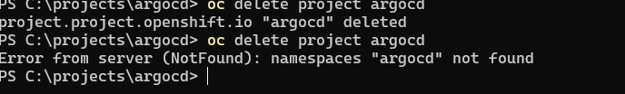
2. Create a New ArgoCD Project
Next, create a new project in OpenShift for ArgoCD:
oc new-project argocd
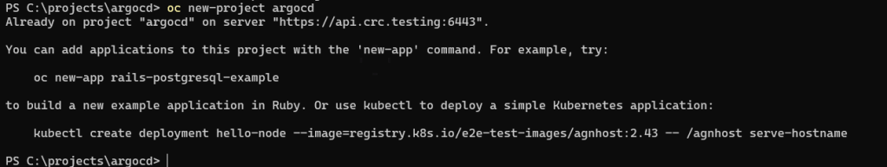
3. Add Secret Keys
Add the necessary secret keys for ArgoCD, such as the server secret key and Redis password: ( before system fails )
oc create secret generic argocd-secret --from-literal=server.secretkey=5HbERIVentK9xid1N8OgzmWafPTCvBQo --from-literal=redis.password=50kQ9NTyhVazFoLtbAsfiYrpGwl8BjxC -n argocd
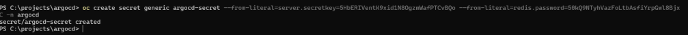
4. Apply the ArgoCD YAML Configuration
Install ArgoCD by applying the provided YAML file:
oc apply -n argocd -f https://raw.githubusercontent.com/argoproj/argo-cd/stable/manifests/install.yaml
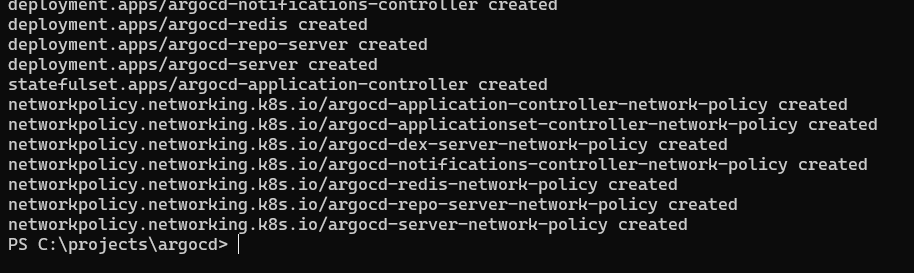
4.B Patch the system
oc patch deployment argocd-server -n argocd -p '{\"spec\": {\"template\": {\"spec\": {\"containers\": [{\"name\": \"argocd-server\",\"command\": [\"argocd-server\", \"--insecure\", \"--auth-mode\", \"server\"]}]}}}}'
5. Verify the Deployment
Check that the ArgoCD pods and services are running:
oc get pods -n argocd
oc get svc -n argocd
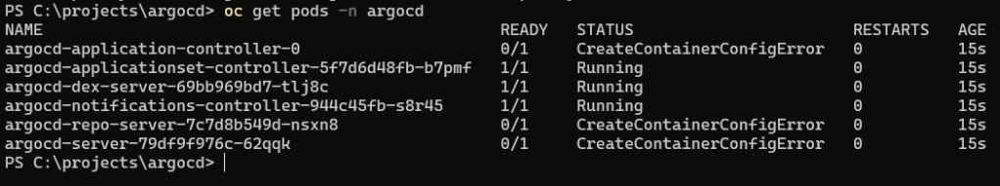
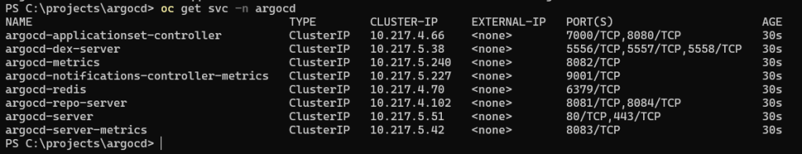
6. Update the Redis Deployment YAML
Modify the Redis deployment configuration to ensure compliance with OpenShift’s Security Context Constraints (SCC):
apiVersion: apps/v1
kind: Deployment
metadata:
name: argocd-redis
namespace: argocd
spec:
selector:
matchLabels:
app: argocd-redis
template:
metadata:
labels:
app: argocd-redis
spec:
securityContext:
runAsUser: 1000700000 # Use a valid UID range as per OpenShift's SCC
containers:
- name: redis
image: redis:6.2-alpine
ports:
- containerPort: 6379
name: redis
7. Apply the Updated Redis Configuration
Apply the updated Redis deployment configuration:
oc delete deployment argocd-redis -n argocd
oc apply -f redis-deployment.yaml -n argocd
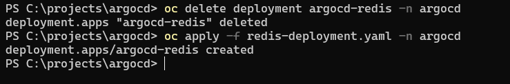
8. Expose the ArgoCD Service
Finally, expose the ArgoCD server service to access it externally:
oc expose svc/argocd-server -n argocd --port=443 --name=argocd-route
oc get route argocd-route -n argocd
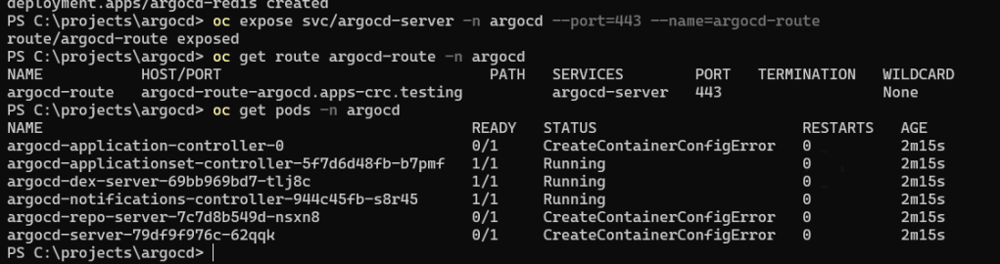
Finally, expose the ArgoCD server service to access it externally:
8. Delete pods in ArgoCD namespace to recreate them all
oc delete pods --all -n argocd
9.Check All pods
oc get pods -n argocd
10. Check reds stateful pod
oc get statefulset -n argocd
11.get all services
oc get svc -n argocd
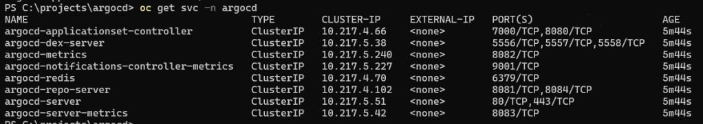
12.force stateful set to restart
oc rollout restart deployment/argocd-redis -n argocd
13.all errors in pods
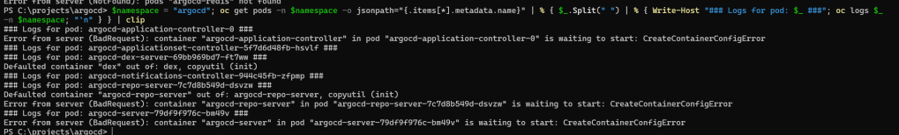
**14.Configmap check **
oc get configmap -n argocd
oc get secret -n argocd
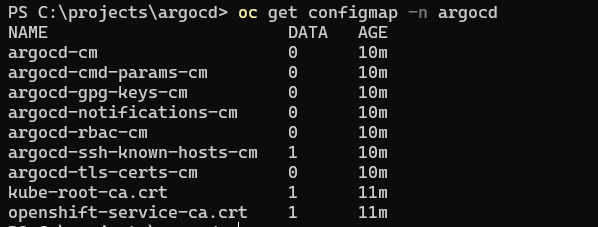
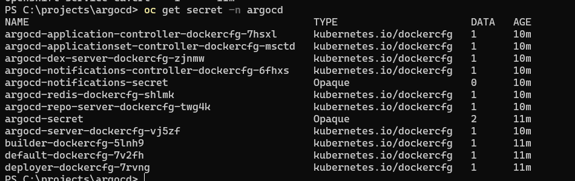
Following these steps, you should have a fully functional ArgoCD setup running on OpenShift, ready to manage your Kubernetes applications efficiently using GitOps principles.
$namespace = "argocd"; oc get pods -n $namespace -o jsonpath="{.items[*].metadata.name}" | % { $.Split(" ") | % { Write-Host "### Logs for pod: $ ###"; oc logs $_ -n $namespace; "`n" } } | clip
**15.Check ui **
Delete and recreate it cant fin the secrets
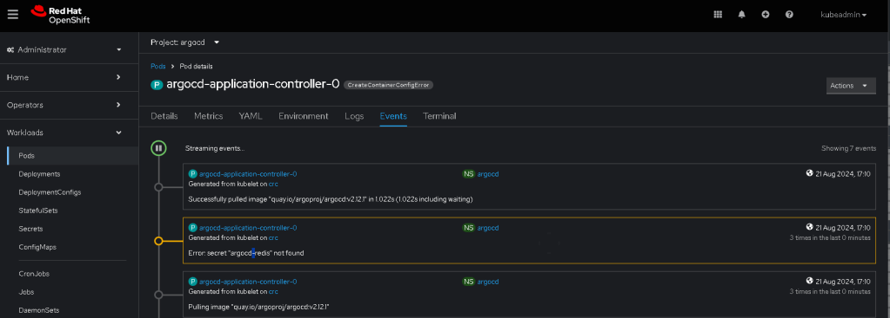
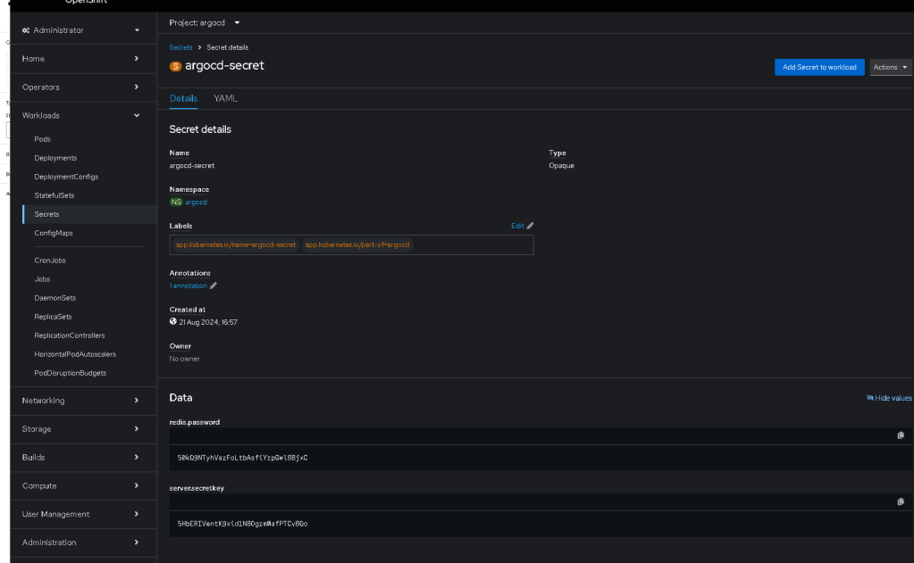
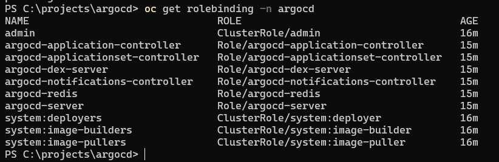
- Get the error from the deployment of the pod in the same context
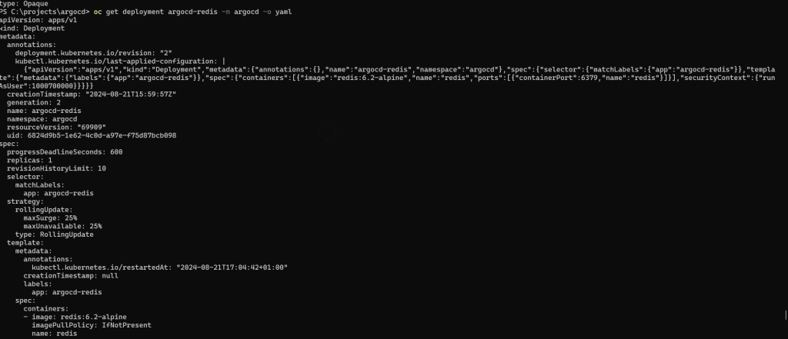
The error you're encountering is related to the Security Context Constraints (SCC) in OpenShift. The argocd-redis pod is failing to start because the user specified in the runAsUser field (1000700000) is not within the allowed range for the SCCs assigned to the service account that the pod is running under.
Steps to Resolve the Issue:
1. Adjust the runAsUser Value
-
The error message indicates that the allowed user ID range is
[1000720000, 1000729999]. To resolve this, you can adjust therunAsUservalue within this range. -
Update the
securityContextin your deployment to use a valid UID:securityContext: runAsUser: 1000720000 -
Apply the updated deployment:
oc apply -f <your-deployment-file>.yaml
2. Use a Different Security Context Constraint (SCC)
-
If adjusting the
runAsUseris not an option, or if you need to use a specific user ID, you might need to assign a different SCC to the service account running the pod. -
For example, you could use the
anyuidSCC, which allows any user ID:oc adm policy add-scc-to-user anyuid -z <service-account-name> -n argocdReplace<service-account-name>with the service account name under which the pod is running.
3. Create a Custom SCC
-
If the predefined SCCs don’t meet your requirements, you can create a custom SCC that allows the specific
runAsUservalue or range that you need. -
Example of creating a custom SCC:
apiVersion: security.openshift.io/v1 kind: SecurityContextConstraints metadata: name: custom-scc runAsUser: type: MustRunAsRange uidRangeMin: 1000700000 uidRangeMax: 1000709999Apply this SCC and then assign it to the necessary service account:oc adm policy add-scc-to-user custom-scc -z <service-account-name> -n argocd
4. Reapply the Deployment
- After making the necessary changes to either the SCC or the
runAsUser, reapply the deployment:oc apply -f <your-deployment-file>.yaml
5. Verify the Deployment
- Check the status of the pods to ensure that they are now running correctly:
oc get pods -n argocd
Summary:
Adjust the runAsUser value to match the allowed UID range or assign an appropriate SCC that allows the required user ID. After making these adjustments, reapply the deployment, and verify that the pods start successfully.
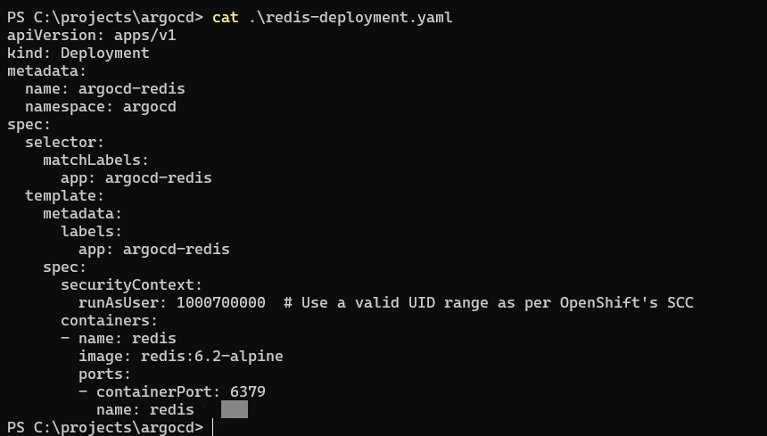
To update your redis-deployment.yaml to align with the valid UID range required by OpenShift's Security Context Constraints (SCC), you can modify the runAsUser value within the allowed range or change the SCC as needed.
Here's the updated redis-deployment.yaml file with the runAsUser set to a valid UID within the default SCC range (1000720000 to 1000729999):
apiVersion: apps/v1
kind: Deployment
metadata:
name: argocd-redis
namespace: argocd
spec:
selector:
matchLabels:
app: argocd-redis
template:
metadata:
labels:
app: argocd-redis
spec:
securityContext:
runAsUser: 1000720000 # Updated to a valid UID range as per OpenShift's SCC
containers:
- name: redis
image: redis:6.2-alpine
ports:
- containerPort: 6379
name: redis
Steps After Update:
-
Save the Updated YAML: Make sure to save the changes to the
redis-deployment.yamlfile. -
Apply the Updated Deployment:
-
Apply the updated deployment configuration to the OpenShift cluster:
oc apply -f redis-deployment.yaml -n argocd -
Verify the Deployment:
-
Check the status of the
argocd-redispod to ensure that it is running correctly:oc get pods -n argocd
By updating the runAsUser to a valid UID, the deployment should now pass the SCC checks, and the pod should be able to start successfully.
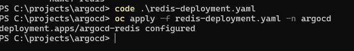
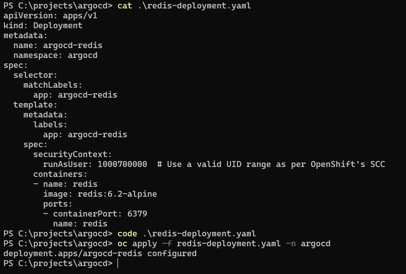
one pod redis accepts it
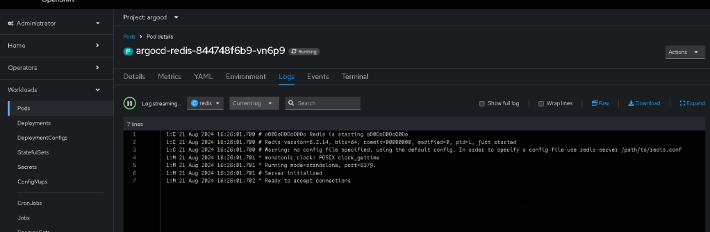
Web Page Login
Login to Argo CD:
Username:
admin
Password:
Use the password retrieved in the previous step.
oc get secret argocd-initial-admin-secret -n argocd -o jsonpath="{.data.password}" | base64 --decode; ech
The
server.secretkey
should be specified in the Argo CD
argocd-cm
ConfigMap.
apiVersion: v1
kind: ConfigMap
metadata:
annotations:
kubectl.kubernetes.io/last-applied-configuration: |
creationTimestamp: "2024-08-21T15:58:10Z"
labels:
app.kubernetes.io/name: argocd-cm
app.kubernetes.io/part-of: argocd
name: argocd-cm
namespace: argocd
resourceVersion: "67030"
uid: 7438f615-2055-4443-9696-49a0056ca612
data:
redis.password: NTBrUTlOVHloVmF6Rm9MdGJBc2ZpWXJwR3dsOEJqeEM=
server.secretkey: NUhiRVJJVmVudEs5eGlkMU44T2d6bVdhZlBUQ3ZCUW8=
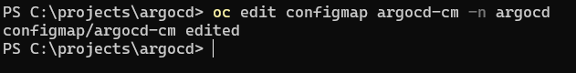
ConfigMap updated with the secret as well not just secret
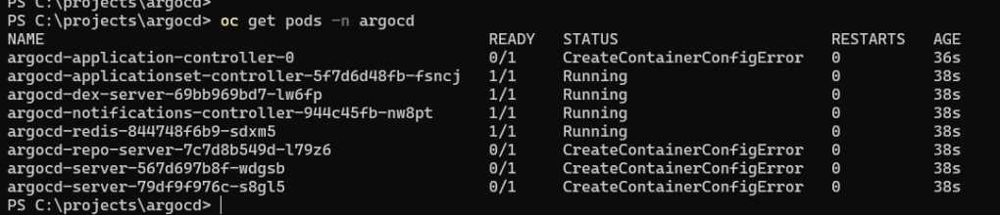
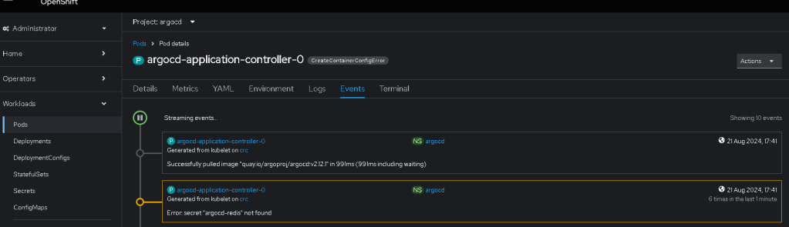
oc edit configmap argocd-cm -n argocd
oc patch configmap argocd-cm -n argocd --patch '{\"data\":{\"server.secretkey\":\"5HbERIVentK9xid1N8OgzmWafPTCvBQo\"}}'
oc patch configmap argocd-cm -n argocd --patch '{\"data\":{\"redis.password\":\"50kQ9NTyhVazFoLtbAsfiYrpGwl8BjxC\"}}'
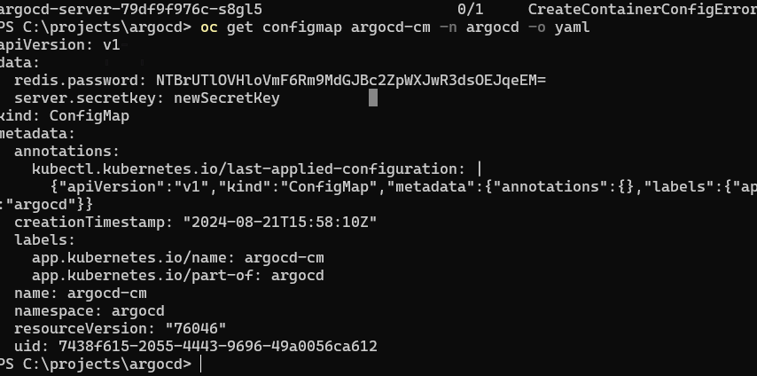
oc create secret generic argocd-secret --from-literal=server.secretkey=5HbERIVentK9xid1N8OgzmWafPTCvBQo --from-literal=redis.password=50kQ9NTyhVazFoLtbAsfiYrpGwl8BjxC -n argocd
When configuring Argo CD, you have a few options for managing secrets such as server.secretkey and redis.password. Here's a guide to help you decide whether to create these secrets yourself or obtain them from the server:
1. Generating Secrets Yourself
If you are setting up Argo CD from scratch or need to specify your own secrets, you can generate them yourself. Here’s how to handle this:
Generating and Creating Secrets
- Generate Random Secret Key:
You can use a command to generate a base64-encoded secret key. For example, usingopenssl:
openssl rand -base64 32
This command generates a 32-byte base64-encoded key.
- Create Kubernetes Secrets: Use
kubectlorocto create the secret in Kubernetes:
kubectl create secret generic argocd-secret --from-literal=server.secretkey=
or for PowerShell:
oc create secret generic argocd-secret --from-literal=server.secretkey=
- Update ConfigMap: After creating the secret, ensure the ConfigMap (
argocd-cm) references the correct secret values.
2. Obtaining Secrets from the Server
If you’re not starting from scratch and you need to obtain existing secrets or configure them based on server-provided values:
Access Existing Secrets
- View Existing Secrets: You can view the existing secrets in your Kubernetes cluster. For example:
kubectl get secret -n argocd
or for PowerShell:
oc get secret -n argocd
- Decode Secret Values: If you need to decode a base64-encoded value from an existing secret:
kubectl get secret argocd-secret -n argocd -o jsonpath='{.data.server.secretkey}' | base64 --decode
or for PowerShell:
$secret = oc get secret argocd-secret -n argocd -o jsonpath='{.data.server.secretkey}'
- Use Existing Secret Values: If the secrets are already in place and properly configured, you can use the existing values directly in your
argocd-cmConfigMap or other configuration files.
Key Points to Remember
-
Security Best Practices: Always ensure that sensitive information such as secret keys and passwords are handled securely. Avoid hardcoding secrets in files and use Kubernetes Secrets for storing them securely.
-
Consistency: If you’re using generated secrets, ensure that they are consistent across all configurations that depend on them. For instance, both the
argocd-cmConfigMap andargocd-secretSecret should be synchronized. -
Validation: After configuring or updating secrets, validate the setup by restarting relevant pods and checking logs to ensure that the changes have taken effect and no errors are present.
By following these guidelines, you can effectively manage secrets for Argo CD, whether you generate them yourself or obtain them from the server.
CHECK FAILING YAML
Your Kubernetes Pod argocd-application-controller-0 is failing to start due to a CreateContainerConfigError, specifically because the secret argocd-redis is not found. This secret is referenced in the environment variables of the container, which means the Pod can't retrieve its configuration correctly.
Here are the steps to resolve the issue:
- Verify Secret Exists: Ensure that the secret
argocd-redisexists in theargocdnamespace. You can check this by running:
kubectl get secret argocd-redis -n argocd
- Create the Secret if Missing: If the secret does not exist, you need to create it. You can do this by using a YAML file or
kubectlcommand. For example, to create a secret with a keyauth, you might use:
kubectl create secret generic argocd-redis --from-literal=auth=
Replace <redis-password> with the actual password for Redis.
- Verify Secret Content: Ensure the secret contains the correct keys and values required by your application. You can inspect the content of a secret by running:
kubectl describe secret argocd-redis -n argocd
-
Check Pod Configuration: Make sure that the environment variable referring to the secret is correctly configured. According to your Pod definition, the secret should be referenced like this:
-
name: REDIS_PASSWORD
valueFrom:
secretKeyRef:
name: argocd-redis
key: auth
Ensure that the name and key fields are accurate.
- Restart the Pod: After creating or correcting the secret, restart the Pod to ensure it picks up the new configuration:
kubectl delete pod argocd-application-controller-0 -n argocd
The StatefulSet will automatically create a new Pod instance.
- Monitor Logs: If the Pod still fails to start, check the logs for more details:
kubectl logs argocd-application-controller-0 -n argocd
Addressing the missing secret should resolve the CreateContainerConfigError and allow your Pod to start successfully. If you encounter further issues, reviewing logs and configurations for additional clues will be helpful.
Created one from ui called argocd-redis
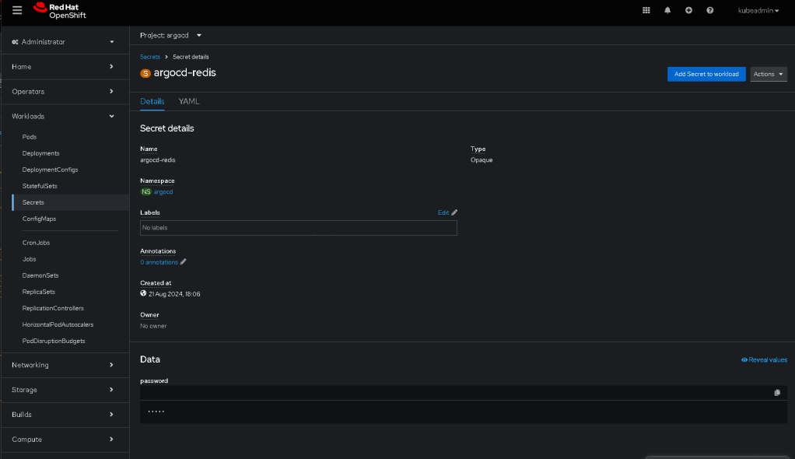
different error
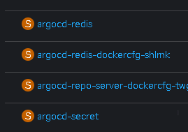
2 different usecases
Error: couldn't find key auth in Secret argocd/argocd-redis
run with 4o mini
Setting up Argo CD in an OpenShift cluster involves several steps. Argo CD is a declarative, GitOps continuous delivery tool for Kubernetes. Here’s a step-by-step guide to help you deploy Argo CD in an OpenShift cluster:
Prerequisites
-
OpenShift Cluster: Ensure you have an OpenShift cluster up and running.
-
CLI Tools: You need
oc(OpenShift CLI) andkubectl(Kubernetes CLI) installed and configured to interact with your cluster. -
Admin Access: Ensure you have admin access to the OpenShift cluster to create resources and namespaces.
Steps to Deploy Argo CD
1. Create a Namespace for Argo CD
First, create a namespace (or project) for Argo CD in your OpenShift cluster:
oc create namespace argocd
2. Deploy Argo CD
You can deploy Argo CD using a Kubernetes manifest. The official Argo CD manifests can be found on their GitHub repository. Apply the manifests to your cluster:
kubectl apply -n argocd -f https://raw.githubusercontent.com/argoproj/argo-cd/stable/manifests/install.yaml
This will deploy Argo CD and its components, such as the API server, repo server, and controller.
3. Expose the Argo CD API Server
By default, Argo CD's API server is not exposed externally. You can expose it using a route in OpenShift:
oc expose svc argocd-server -n argocd
This command creates a route that allows you to access the Argo CD API server from outside the cluster. You can check the route with:
oc get routes -n argocd
The URL shown in the output will be used to access the Argo CD web UI.
4. Retrieve the Admin Password ( MYMISTAKE EVERYTIME NEW)
Argo CD generates a default admin password that is stored in a Kubernetes secret. Retrieve it using the following command:
$secret = oc get secret argocd-initial-admin-secret -n argocd -o jsonpath='{.data.password}' | Out-String; System.Text.Encoding::UTF8.GetString([System.Convert]::FromBase64String($secret.Trim()))
This will output the initial admin password for Argo CD.
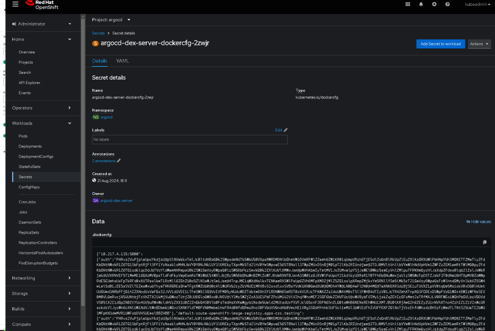
5. Access the Argo CD Web UI
Open a browser and go to the route URL obtained earlier. Use the username admin and the password retrieved in the previous step to log in.
6. (Optional) Configure Argo CD
You can now start configuring Argo CD to manage your applications. Typically, you will:
-
Connect Argo CD to your Git repositories.
-
Create and manage applications using the Argo CD web UI or CLI.
7. Install the Argo CD CLI (Optional)
You may also want to install the Argo CD CLI for managing Argo CD from the command line. Follow these instructions to install the CLI:
On macOS
brew install argocd
On Linux
curl -sSL -o argocd https://github.com/argoproj/argo-cd/releases/download/v2.6.6/argocd-linux-amd64
chmod +x argocd
sudo mv argocd /usr/local/bin/
Replace the version (v2.6.6) with the latest version from the Argo CD GitHub releases page.
8. Log in Using the CLI
You can use the Argo CD CLI to log in to your Argo CD instance:
argocd login
Replace <ARGOCD_SERVER> with the route URL obtained earlier and <PASSWORD> with the initial admin password.
That's it! You should now have Argo CD running in your OpenShift cluster, ready to manage your deployments using GitOps principles. If you have any specific questions or run into issues, feel free to ask!
To create ArgoCD in an OpenShift cluster, you'll need to follow these general steps:
-
Install the OpenShift GitOps operator
-
Create an ArgoCD instance
-
Access the ArgoCD UI
-
Configure ArgoCD
Here's a more detailed breakdown:
-
Install the OpenShift GitOps operator:
-
Log in to your OpenShift web console
-
Navigate to Operators > OperatorHub
-
Search for "OpenShift GitOps"
-
Click on the OpenShift GitOps tile and then click "Install"
-
Choose the namespace for the operator (typically "openshift-operators")
-
Click "Install" to proceed
-
Create an ArgoCD instance: After the operator is installed, you can create an ArgoCD instance using a YAML manifest:
apiVersion: argoproj.io/v1alpha1
kind: ArgoCD
metadata:
name: argocd
namespace: openshift-gitops
spec:
server:
route:
enabled: true
Apply this manifest using:
oc apply -f argocd.yaml
-
Access the ArgoCD UI:
-
Find the ArgoCD route:
oc get route argocd-server -n openshift-gitops -
Use the URL from the output to access the ArgoCD web interface
-
Configure ArgoCD:
-
Get the initial admin password:
oc extract secret/openshift-gitops-cluster -n openshift-gitops --to=- -
Log in to the ArgoCD UI using "admin" as the username and the extracted password
-
Change the password after first login
-
Start configuring your applications and repositories
Remember to adjust resource requests and limits, configure RBAC, and set up any necessary integrations based on your specific requirements.
Would you like me to elaborate on any part of this process?
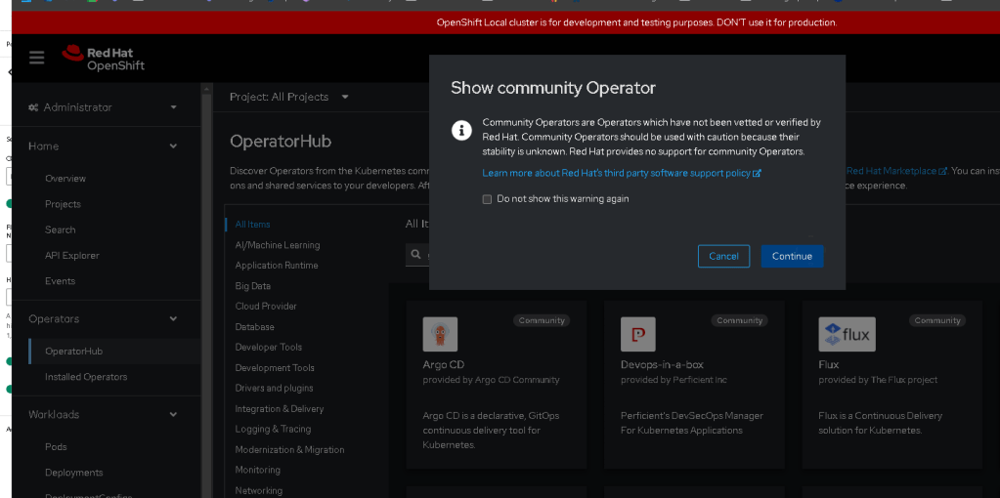
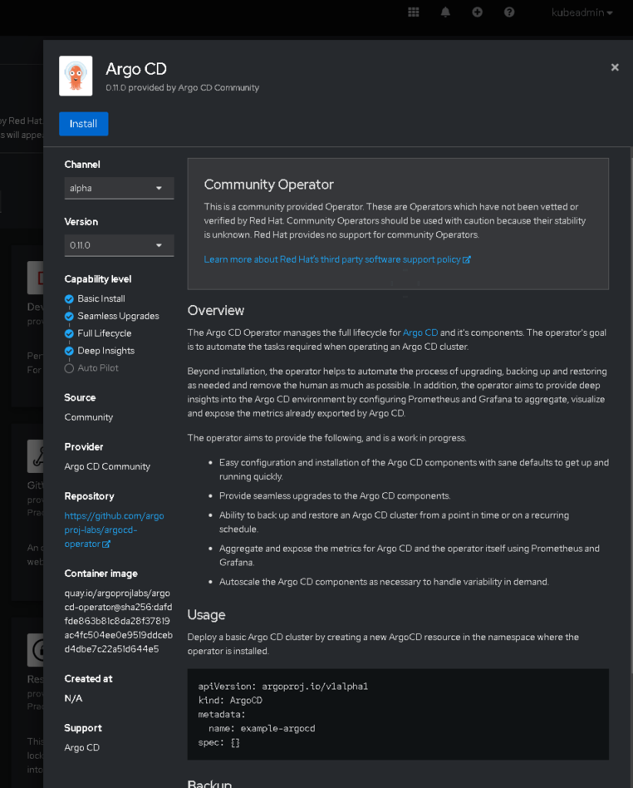
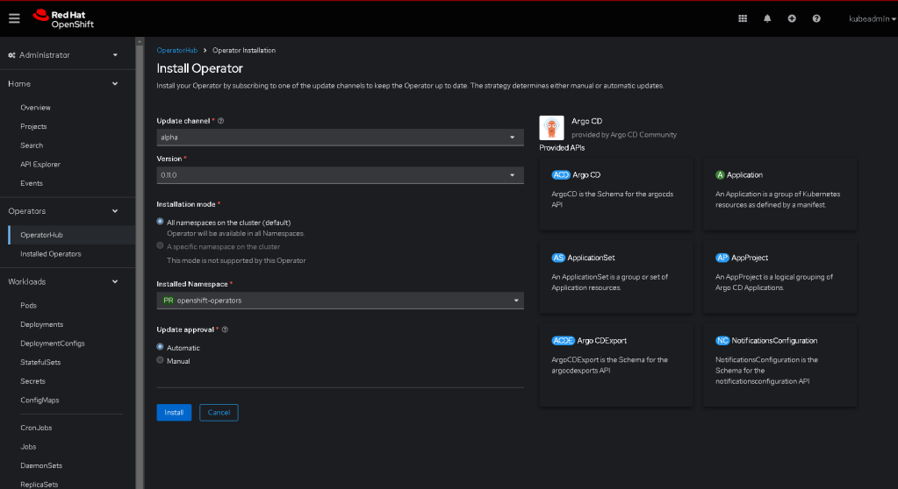
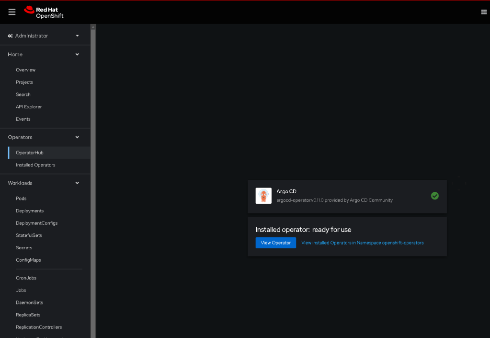
Tested yaml
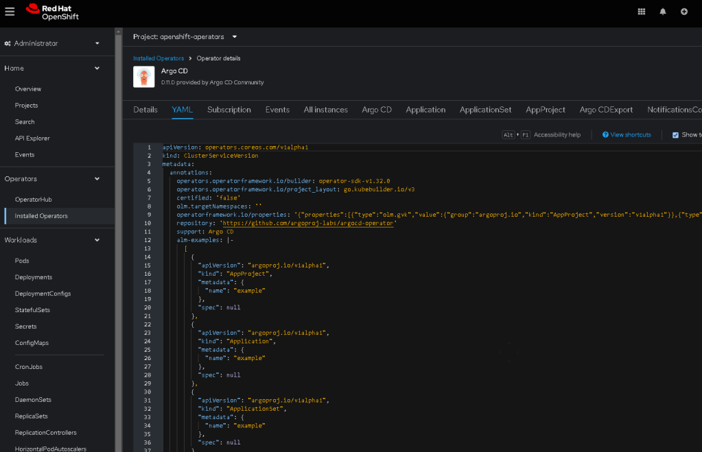
Subs
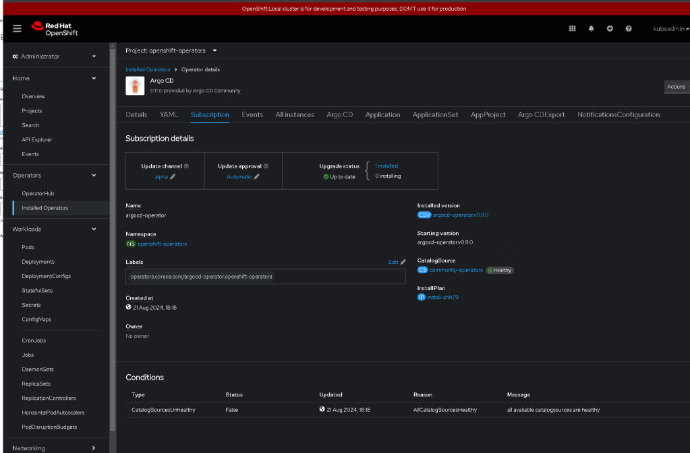
Create instance and multi enviroment and multi instances
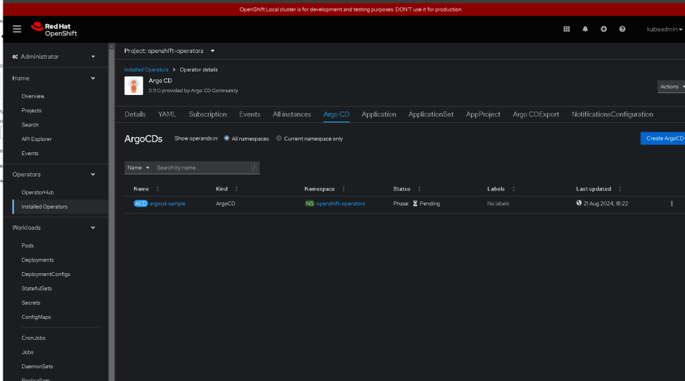
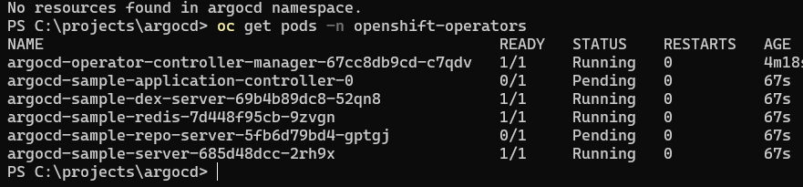
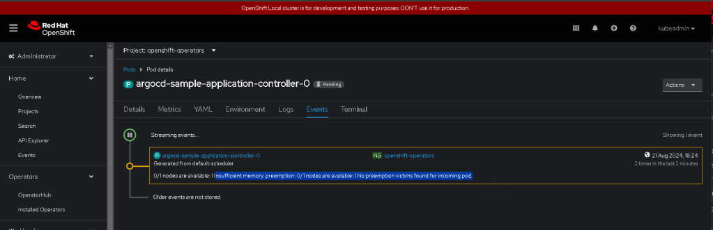
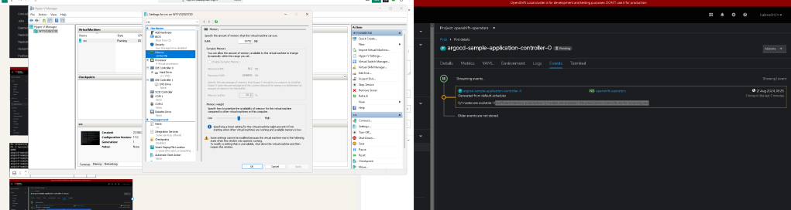
Direct application creation is also possible in argocd
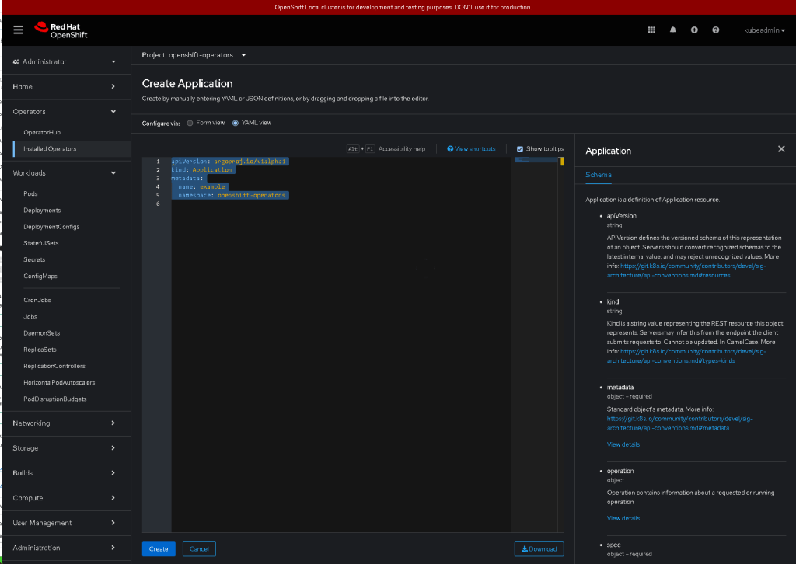
AMD GPU is there
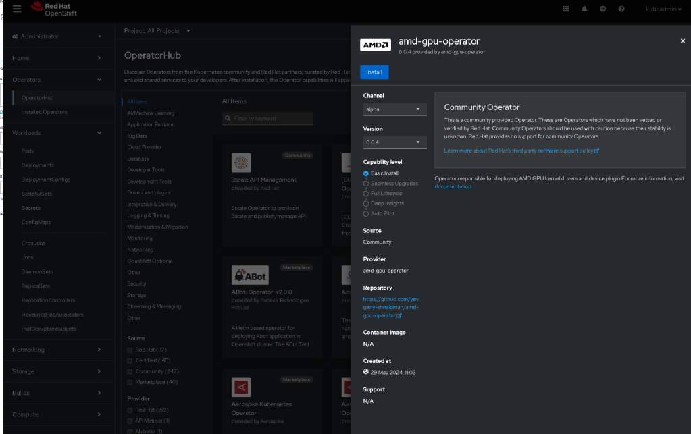
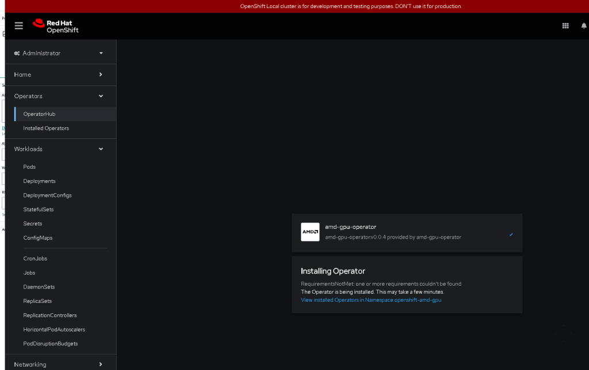
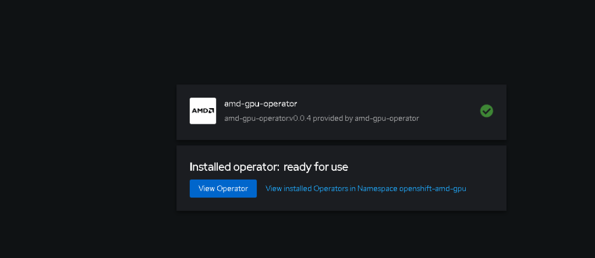
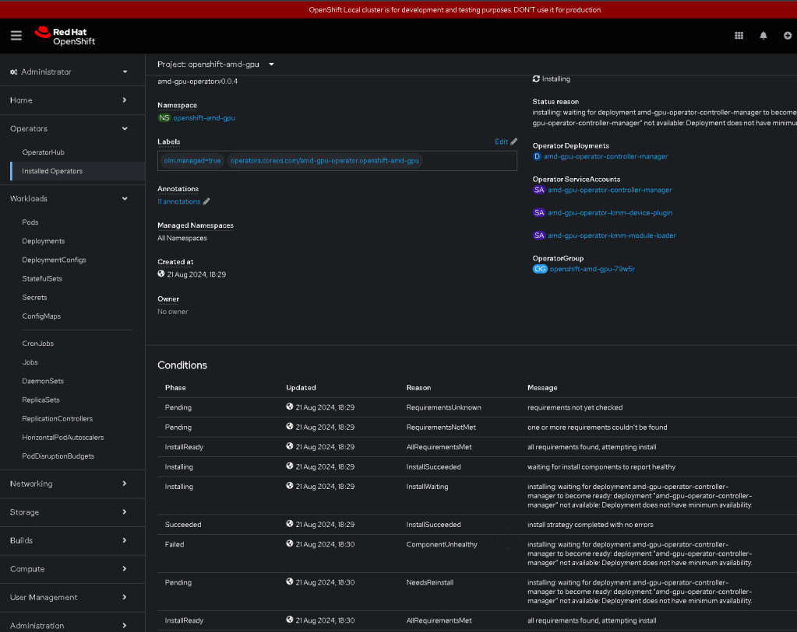
Imported from rifaterdemsahin.com · 2025